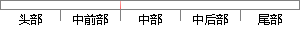

其中，a_i是节点i的输出值，w_ki是节点i到它的下一层节点k的连接的权重，δ_k是节点i的下一层节点k的误差项。
片段位置图

相似结果|
相似片段 1：作用就是对误差进行计算，以判断输人与输出之间的关系，一般地，其主函数可由下式表示：E=l，2×∑(如一仉)2 f4)4)自学习模型所谓人工神经网络的学习，本质上是指下一层节点与上一层节点之间的权重矩阵W。的初始设定及误差不断修正
相似片段 2：输出层，其间每一层神经元只影响到下一层神经元的状态．然后，以其输出与样例的期望输出进行比较，如果它们的误差不能满足要求，则沿着原来的连接通路逐层返回，并利用两者误差按一定的原则对各层节点的连接权值进行调整，使误差逐步减小，直到满足
相似片段 3：隐含层(图中只画出一层)，一层内的节点(神经元)只和与该层紧邻的下一层的各节点连接。这个网络的学习过程由正向传播和反向传播2个过程组成。在正向传播过程中，输入信息从输入层经隐含层逐层处理，然后传向输出层，每一层神经元的状态只影
相似片段 4：后得到输出值Y，即：YJ—f(∑w㈧X-0j) (1)为使训练更有效，其中函数f常取Sigmoid函数‘61。BP神经网络是由大量神经元相互连接而成。它分为输人层、隐含层和输出层。结构如图1所示，每一节点的输出被送到下一层的所有节点
相似片段 5：!!!!!!!!!!!!!!!!!!!!!!!!!!!!!!!!!!!!!!!!!!!!!!!!!!!!2001图 ! 误差反向传递（"#）神经网络模型 图 $ 神经元示意图信息由输入层经隐含层传向输出层，如果在输出层不能得到期望的输出，则转入反向传播，将误差信息沿原来的连接通路返回，修改各层节点间的连接权重值，如此往复调整网络参数，使之误差
|
※ 片段修改建议 ※
近似词参考：- 其中：此中 个中
- 连接：毗连 毗邻
- 误差：偏差
系统自动生成语句：此中，a_i是节点i的输出值，w_ki是节点i到它的下一层节点k的毗连的权重，δ_k是节点i的下一层节点k的偏差项。
注：本片段修改建议为系统自动生成，仅供参考。